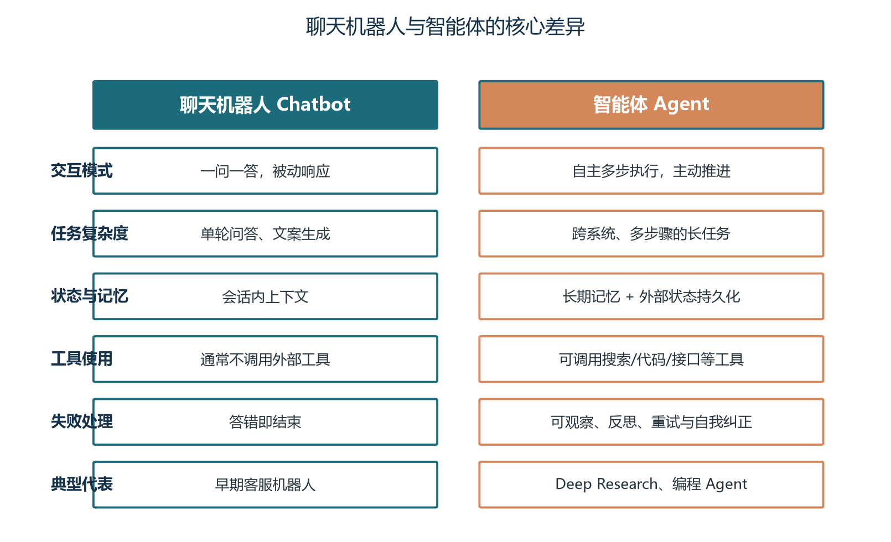
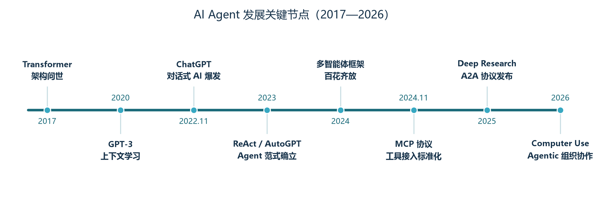
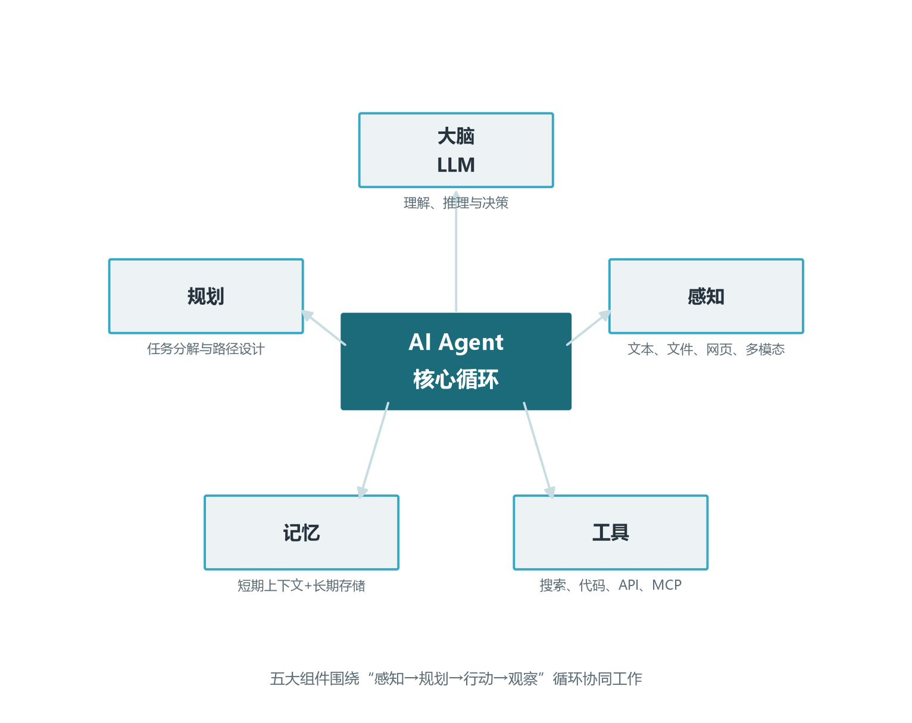

前言：为什么从这一卷开始
欢迎来到《Agent 开发工程师修炼手册》。这是一套面向实战的系列教程，共十九卷正文（外加导读卷与附录速查卷），目标是带你从零建立起 AI Agent 开发的完整知识体系，并逐步成长为能够独立设计、开发、部署生产级 Agent 系统的工程师。整套手册按照“打地基、造器官、成系统、上战场”四个阶段组织：卷二到卷六打牢模型层的地基，卷七到卷十二为模型装上 Agent 的核心器官，卷十三到卷十五把单体 Agent 扩展为完整系统，卷十六以安全与生产化收束主线，卷十七至卷十八是能力延伸（多模态与成本治理），卷十九则以端到端动手项目把全部知识串成可运行的代码。
在动手写第一行 Agent 代码之前，值得先花三到五个小时建立一张完整的认知地图。这并非浪费时间：Agent 开发是一个横跨模型原理、软件工程、数据系统与产品设计的交叉领域，初学者最常见的困境不是学不会某个技术点，而是不知道眼前这个技术点在整个体系中处于什么位置、为什么需要它。比如“上下文压缩”这个动作，既与模型层的 KV Cache 原理有关，又与提示词工程的结构设计有关，还与记忆系统的分层存储有关——如果你只从某个框架的 API 文档入手，很容易把它当成一个孤立参数来死记硬背；而如果你先看到了全景，它就成了“有限上下文预算的分配问题”这个统一原理下的自然产物。
本卷不涉及任何复杂的数学公式与代码细节，只回答四个问题：Agent 到底是什么？它从哪里来、要到哪里去？一个 Agent 系统由哪些部件组成？作为一名 Agent 开发工程师，你需要掌握哪些技能、按什么路径学习？把这四个问题想清楚，后面十五卷的每一块知识才能各归其位，你才不会在学习具体技术时“只见树木、不见森林”。
学完本卷，你将能够：
- 用准确的定义区分 Agent、聊天机器人、工作流自动化与 RPA，判断一个产品是不是真正的 Agent；
- 说出 2017 年到 2026 年 Agent 发展史上八个关键节点及其意义，理解每一代技术分别解决了什么瓶颈；
- 画出一个 Agent 系统的五大组件与六层技术栈，并指出每层对应的代表性技术；
- 对照技能地图评估自己的起点，制定未来几个月的学习计划。
本卷出现的技术名词（如 RAG、MCP、KV Cache、MoE）都会在后续各卷中展开讲解，此处只需建立印象、不必深究。建议边读边准备一个笔记本，把“看不懂但很重要”的名词记下来，学到对应卷次时回头核对——这份清单就是你个人知识图谱的生长点。每卷末尾的“思考与练习”建议动手完成，这是检验理解深度的最好方式。
关于这套手册的使用方式再说明两句。每卷都是自包含的：正文覆盖“是什么、为什么、怎么做”，提示框提炼关键结论，思考与练习提供动手抓手；各卷之间用“卷 N”相互引用，读到哪里、需要前置知识时可以随时回翻。如果你是带着具体项目来学习的，推荐“项目驱动读法”：先读卷一与你的项目最相关的一卷（客服项目读卷八，自动化项目读卷十），边读边搭项目骨架，遇到知识缺口再按引用回溯——学习曲线虽然陡一些，但每一步都直接服务于产出。
第一章 什么是 AI Agent：从对话到行动
1.1 一个直观的例子
假设你对一个 AI 助手说：“帮我调研一下三款主流向量数据库的优缺点，整理成对比表格，发送到我的邮箱。”聊天机器人会怎么做？它要么基于训练语料给你一段笼统的介绍——信息可能停留在训练截止日期，无法反映最新版本；要么直接承认无法发送邮件——它只会“说”，不会“做”。你拿到结果后，还需要自己核实信息、自己整理格式、自己复制粘贴到邮件里发出去。 AI 只参与了“说”的那一段。
Agent 则完全不同。它接到任务后，会先把目标拆解成若干步骤：先确定候选产品范围（可能先搜索“2026 主流向量数据库”确认行业现状），再分别检索每个产品的最新资料，接着提取关键维度（性能、生态、成本、运维复杂度）做横向对比，然后生成表格，最后调用邮件接口发送。每一步执行后，它还会检查结果是否符合预期：检索到的资料是否过时？对比维度是否齐全？邮件是否发送成功？如果某一步失败——比如搜索接口超时——它会换一种方法重试，或者调整策略改用另一个数据源。整个过程可能持续几分钟，期间你不需要做任何事情，只需要在开始时说清楚目标，在结束时检查成果。
这就是 Agent 与传统 AI 应用最本质的区别：Agent 不只是“回答问题的智能”，更是“完成任务的智能”。它把语言模型的推理能力，工程化为一个可执行的行动闭环。语言模型在其中的角色发生了微妙而深刻的变化：从“答案生成器”变成了“决策器”——每一轮它输出的不是给用户看的最终回复，而是“下一步该做什么”的决策，真正的执行交给程序化的工具层。这个转变是理解后面所有技术设计的钥匙。
1.2 Agent 的严格定义
业界对 Agent 的定义表述各异，但核心要素高度一致。我们可以给出一个工作定义：AI Agent 是一类以大语言模型为核心控制器，能够感知环境、自主规划、调用工具、持续记忆，并在反馈中修正自身行为，最终完成给定目标的软件系统。
这个定义包含五个关键词，每一个都对应一套技术体系，值得逐个展开。第一是“以大语言模型为核心控制器”，这决定了 Agent 与传统程序的分野：它的每一步决策不是硬编码的 if-else，而是模型根据当前上下文动态推理出来的。好处是泛化能力极强——面对没见过的新任务，它也能给出合理的行动方案；代价是行为不确定——同样的输入在不同时刻可能产生不同的决策，这给测试与质量保障带来了全新挑战，卷十五的评估体系正是为应对这一点而生。
第二是“感知环境”。Agent 需要读取文本、文件、网页甚至屏幕截图，把外部世界翻译成模型能理解的信息。感知的质量直接决定决策的质量：一份被切分得支离破碎的文档、一段丢失了表格结构的网页正文，都会让后面的模型“巧妇难为无米之炊”。这就是为什么文档解析与切分会被认为是 RAG 系统中最被低估的环节（卷八将专门讨论）。
第三是“自主规划”。面对复杂目标，Agent 要把大任务分解为可执行的小步骤，并根据执行情况动态调整。规划能力有多个层次：最简单的是把“先想后做”写进提示词（思维链，卷七）；进一步是显式生成计划再逐步执行（计划与执行分离，卷十二）；更进一步是根据执行反馈重规划、探索多条路径（思维树与蒙特卡洛树搜索，卷十二）。
第四是“调用工具”。模型的输出不止于文字，还可以是结构化的工具调用指令，让程序去执行真实世界的操作：搜索、计算、读写数据库、调用第三方 API、操作图形界面。工具调用涉及一套完整的协议栈——从模型厂商的 Function Calling 接口，到标准化的 MCP 协议，再到 Agent 互联的 A2A 协议（卷十、卷十四）。
第五是“持续记忆与自我修正”。Agent 在多轮执行中维护状态、沉淀经验，并在失败时反思重试。短期记忆对应上下文窗口的管理（卷七、卷十一），长期记忆对应向量库与记忆框架（卷十一），自我修正则依赖反思机制与错误恢复策略（卷十二）。
Agent = LLM（大脑）+ 规划（方法）+ 记忆（状态）+ 工具（手脚）+ 循环（生命）。缺任何一项，都只是普通程序或普通对话系统。后续各卷正是围绕这五个关键词逐层展开：卷二至卷六理解大脑，卷七至卷十二装上器官，卷十三至卷十五组装系统，卷十六保障生存。
1.3 Agent 与相邻概念的区别
实际工作中，最容易被混淆的是四类系统：聊天机器人（Chatbot）、工作流（Workflow）、RPA 与 Agent。它们都可能与用户对话、都能自动化任务，但智能的来源与行动的方式完全不同，混为一谈会导致严重的技术选型错误。
聊天机器人以对话为目标，一次交互就是一问一答，模型输出即最终结果，不调用外部工具，也不为“完成任务”负责。它的价值在于自然语言理解与生成，局限性在于“止于言”。工作流（如通过可视化编排平台串联的 LLM 调用链）把步骤预先写死：先调用模型 A 提取实体，再调用模型 B 生成摘要，最后写入数据库——LLM 只是被安插在固定节点上的处理器，执行路径完全由开发者确定。工作流的优势是确定性强、易测试、成本低，劣势是僵硬——一旦遇到预设之外的情况（比如用户上传的不是合同而是发票），整条流水线就失效了。RPA（机器人流程自动化）通过模拟鼠标键盘操作重复人类动作，它执行得很好，但完全不“理解”任务，界面一变就失效，维护成本随界面变化线性增长。
而 Agent 的执行路径是在运行时由模型自主决定的：同一个目标，面对不同的输入状态，Agent 会走出不同的路径。它理解任务语义，因此能应对环境变化；它会自己选择工具，因此不依赖脆弱的界面坐标。一句话概括：工作流是“开发者替模型走路”，Agent 是“模型自己走路”。
在工程实践中，两者并非对立——成熟的系统往往是“工作流的骨架 + Agent 的关节”：关键路径用工作流保证确定性与可审计，不确定的子任务交给 Agent 自主完成。例如一个理赔处理系统，单证校验、规则审核走固定流程，而材料缺失时的补充沟通、疑难案件的预审判断交给 Agent。这种混合架构在卷十三、卷十六中还会反复出现。判断某个子任务该用工作流还是 Agent 的实用标准是：如果这个任务的解法可以被完整写出来且很少变化，用工作流；如果解法依赖对具体内容的理解判断，用 Agent。

1.4 Agent 的能力分级
为了更精确地讨论“一个系统有多像 Agent”，业内常用分级框架来刻画自主性程度。参考自动驾驶的 L0 到 L5 分级思路，可以把 AI 系统同样划分为六级。分级的好处是让争论变得可讨论：当有人说“Agent 已经能取代程序员了”，你可以追问“你说的是 L3 的代码补全，还是 L4 的自主修复缺陷？”——多数争论的根源是双方谈论的不是同一个级别。
| 级别 | 名称 | 特征 | 典型例子 |
|---|---|---|---|
| L0 | 无智能 | 纯人工操作，软件只做记录 | 传统表单系统 |
| L1 | 工具级 | 固定规则或单点模型，无上下文理解 | 拼写检查、关键词搜索 |
| L2 | 对话级 | 能理解语言并生成回复，但不行动 | 早期聊天机器人 |
| L3 | 辅助级 | 能调用工具完成单步任务，人类逐步确认 | 带联网搜索的对话助手 |
| L4 | 任务级 | 能自主分解并完成多步任务，人类只给目标 | Deep Research、编程 Agent |
| L5 | 组织级 | 多个 Agent 协作，相互委派、监督与审查 | Agentic 组织、自动化数字员工 |
需要说明的是，分级描述的是“自主性”而非“智能水平”。一个 L4 的调研 Agent 在它的专业域内可能比 L3 的通用助手表现更差——自主性放开的同时也放大了错误积累的风险。当前产业界的主流产品集中在 L3 与 L4 之间：L4 系统在代码生成、深度调研等窄域已经可用，但在开放域仍然需要人类监督；从 L3 到 L4 的跨越，工程难点不在模型，而在评估（怎么知道它做对了）、记忆（中断后怎么继续）与安全（失控了怎么办）。L5 更多是方向性探索，其技术基础正是卷十三到卷十五要讲的多智能体协作与通信协议。
给团队规划 Agent 项目时，建议用分级语言设定预期：第一阶段做到 L3（每一步人类确认），积累信任与评估数据；第二阶段在高置信度环节放开到 L4（异常时上报人类）。直接瞄准“全自动”的项目，绝大多数死于信任崩塌而非技术缺陷。
1.5 三个认知误区：Agent 不是什么
划清“是什么”的边界后，再划清“不是什么”，认知才算完整。误区一：Agent 不是“更聪明的聊天机器人”。加再多的提示词技巧，只要系统不为完成任务负责、不调用工具、不维护跨轮状态，它就还停留在 L2。判断标准很简单：让它“把结果整理好发给张三”，它有没有真的发出去。误区二：Agent 不是无所不能的自主意识。当前 Agent 的“自主”是在工程护栏内的自主——循环上限、工具白名单、预算约束、人工审批点，这些护栏不是权宜之计，而是设计的一部分；宣传中“全自主数字员工”的想象，与现实之间差着一整个卷十六。
误区三：Agent 不是要替代现有系统。落地的摩擦往往来自组织内部：“我们已经有 CRM、工单系统、RPA 平台，Agent 算什么？”正确的定位是：Agent 是粘合与驱动这些系统的“智能执行层”——它通过 API 与既有系统协作，把原来需要人拷贝粘贴、来回切换的环节自动化。把 Agent 当成推倒重建的理由，项目多半会失败；把它当成现有资产的智能粘合剂，项目才有落脚点。
第二章 Agent 发展简史：八年三级跳
2.1 技术前史：语言模型的两次革命
Agent 的故事要从语言模型自身讲起。2017 年，Google 发表的论文《Attention Is All You Need》提出了 Transformer 架构，其核心的自注意力机制让模型能够并行处理长文本并捕捉任意距离的语义关联。这是第一次革命：它解决了循环神经网络难以并行、长程依赖弱的痼疾，为此后所有大模型奠定了统一的架构蓝本。今天我们熟知的 GPT、Claude、Gemini、Qwen、DeepSeek，尽管训练方法与规模各异，底层架构都是 Transformer 的后裔。卷二将深入这一架构的内部机制——理解它不只是满足好奇心：上下文窗口为什么有限、长文本为什么“中段遗忘”、推理为什么按 Token 计费，这些日常工程问题的答案都藏在架构细节里。
2020 年，OpenAI 发布 1750 亿参数的 GPT-3，发现了“上下文学习”现象：模型无需更新参数，仅在提示词中给出几个示例，就能学会新任务。这是第二次革命：它意味着语言模型具备了通用的任务适应能力，“提示词”从此成为一种新的编程界面。在 GPT-3 之前，让模型适应新任务需要收集数据、微调参数、部署上线，周期以周计；之后，写清楚需求描述就能让模型切换任务，周期以分钟计。这种“用自然语言编程”的范式，后来演化为提示词工程与上下文工程两个逐步深化的技术方向（卷七）。
这两次革命解决了“模型足够聪明”的问题，但彼时的模型仍然只会输出文字：你问它答，仅此而已。模型的能力被锁死在对话框里，触不到搜索引擎、数据库与文件系统。让文字变成行动，还需要第三个关键拼图。

2.2 范式确立：2022 到 2023 的 Agent 元年
2022 年 11 月 ChatGPT 发布，两个月内用户破亿，对话式 AI 完成大众普及，也把“模型即产品”的可能性推到了整个行业面前。但真正的转折发生在更早的 2022 年 10 月：Google 研究者发表的 ReAct 论文提出，让模型交替输出“思考（Reasoning）”与“行动（Action）”，把推理过程与工具调用交织进行。模型先写下“我需要先查一下这家公司的成立时间”，程序解析这个意图并调用搜索工具，把结果喂回模型，模型再写下下一步。这个看似简单的范式，赋予了模型“边想边做”的能力，直到今天仍是绝大多数 Agent 的骨架，卷十二将完整剖析它。
2023 年上半年，两个开源项目点燃了公众想象。AutoGPT 把 GPT-4 包进一个自主循环：给定目标，它自动生成计划、执行、自我评估、迭代，直到目标完成或预算耗尽。它在 GitHub 上线两周即斩获数万星标，成为史上增长最快的开源项目之一。尽管它常常在循环中迷失、烧掉大量 Token 却完不成任务，但“给 AI 一个目标，它自己干完”的图景自此深入人心。BabyAGI 则用一百多行代码演示了任务队列驱动的自主执行，证明了 Agent 骨架的极简可行性。同年，LangChain、LlamaIndex 等框架兴起，为工具调用、记忆管理、检索增强提供了标准组件，Agent 开发第一次有了“脚手架”。
这个阶段还有一条容易被忽视的支线：中文生态的快速跟进。智谱 GLM、阿里通义千问、DeepSeek 等国产模型在 2023 年密集开源，中文语料分词效率、中文知识覆盖与国内可获得的 API 通道，让中文世界的 Agent 开发没有停留在“围观”。到 2025 年，DeepSeek-R1 以极低的训练成本复现了顶级推理能力并彻底开源，Qwen 系列成为全球下载量最大的开源模型家族之一——中文工程师第一次同时站在模型侧与 Agent 应用侧的两端。本手册的示例也因此兼顾国际主流与国产开源两套技术栈。
这个阶段的突破可以概括为三要素齐备：模型（GPT-4 级别的推理能力）、范式（ReAct 的思考-行动循环）、框架（LangChain 等工程组件）。三者叠加，Agent 从论文概念变成了可开发的软件形态。但热情掩盖不了问题：2023 年的 Agent 演示炫目而成果寥寥，社区自嘲“Agent 一句话，工程师一周工”——可靠性的欠账要到后面两年才逐步还清。
2.3 工程深化：2024 年的记忆、规划与多智能体
2023 年的 Agent 有三大瓶颈：记忆短暂（上下文窗口之外一片空白）、规划脆弱（多步任务一步走偏就全盘皆输）、单兵作战（一个 Agent 包打天下）。2024 年的产业演进正是逐一对付这三个瓶颈，Agent 开始从“演示品”变成“工程品”。
记忆方面，MemGPT（后来的 Letta）借操作系统的虚实分页思想，提出“把上下文窗口当内存、把外部存储当磁盘”的分层记忆管理；Mem0 等框架让 Agent 获得了跨会话的长期记忆——记住你的偏好、项目背景与历史决策，下次对话不必从零开始。规划方面，思维树（Tree of Thoughts）让模型探索多条推理路径再择优，Reflexion 让 Agent 从失败中生成语言化的教训并用于重试，这些方法显著降低了“一条道走到黑”的概率。协作方面，MetaGPT、AutoGen、CrewAI 等多智能体框架爆发，把软件工程中的角色分工移植给 Agent 团队：产品经理 Agent 写需求，架构师 Agent 做设计，程序员 Agent 写代码，测试 Agent 挑毛病。同年 9 月，OpenAI 发布 o1 推理模型，用“回答前思考更久”（生成更长的内部推理链）换取“答得更准”，在数学、代码、规划类任务上带来代际提升，为 Agent 提供了更强的推理内核，卷四将专门讨论推理模型与思考预算。
这一年的关键词是“工程化”：社区开始认真谈论可靠性、状态持久化、评估指标、成本核算这些朴素却致命的问题。LangGraph 引入的状态图与检查点机制就是典型代表——它把 Agent 的执行过程建模为可保存、可回滚的状态机，让长任务拥有了“断点续传”能力。这些工程基建的意义，要等到 Agent 任务时长从几分钟延长到几小时时才会完全显现。
2.4 标准化与落地：2025 到 2026 的协议战争
当 Agent 数量爆炸式增长后，两个集成难题浮出水面，其性质类似于互联网早期的“协议真空”。难题一：Agent 如何接入千差万别的工具与数据源？每接一个新模型就要重写一遍工具适配，M 个模型乘 N 个工具就是 M×N 份集成工作，业界称之为“M×N 集成地狱”。难题二：Agent 与 Agent 之间如何互相发现、委派任务、协商进度？不同公司、不同框架构建的 Agent 彼此是黑盒。
2024 年 11 月，Anthropic 发布 MCP（Model Context Protocol，模型上下文协议），把“模型如何连接工具与数据”标准化：任何工具只要实现一次 MCP 服务器，就能被任何支持 MCP 的模型与客户端使用，M×N 集成坍缩为 M+N。MCP 迅速获得 OpenAI、Google 等主要厂商跟进，数千个社区 MCP 服务器涌现，成为工具接入的事实标准，卷十将完整讲解其架构与开发方法。
2025 年 6 月，Google 发布 A2A（Agent2Agent）协议，解决 Agent 之间的互相发现、任务委派与进度协商，随后捐赠给 Linux 基金会 neutral 治理，数百家企业加入生态。A2A 与 MCP 形成清晰分工：MCP 连接“Agent 与工具”，A2A 连接“Agent 与 Agent”，两者互补而非竞争，卷十四将对比详解。同期，OpenAI 的 Deep Research 展示了 L4 级任务的可行性：给定一个研究课题，Agent 自主检索上百个网页、交叉验证信息、输出带引用的万字报告，十几分钟完成人类数小时的工作。Anthropic 与 OpenAI 相继推出 Computer Use 类能力，让 Agent 像人一样看屏幕、点鼠标、打键盘，解锁了存量软件的自动化空间。
到 2026 年，Agent 开发的重心已经从“能不能做”转向“做得是否可靠、安全、省钱”：企业采购 Agent 方案时的必答变成了准确率多少、越权风险如何防、单任务成本几何——这正是可观测性、评估体系与安全工程成为独立技术领域的原因，也是本手册卷十五、卷十六的主题。回望这八年，一条清晰的脉络浮现：模型能力每上一个台阶（Transformer、上下文学习、推理模型），工程就补上一课（框架、记忆与规划、协议与治理），而下一课永远是“让能力可依赖”。对学习者的启示很直接：只追模型新闻会永远浮躁，只学框架 API 会快速过时，把“原理—工程—治理”三条线都纳入视野，才能在这个快速演进的领域里保持稳定的学习复利。
我们总是高估技术的短期影响，而低估它的长期影响。Agent 在 2023 年被高估为“一年取代所有软件”，又在 2025 年被低估为“不过是套壳对话”——真相是，它正在成为软件的新形态。
—— 系列编者
2.5 八年演进沉淀出的五条工程规律
回望这段历史，有五条规律反复被验证，值得在动手开发前就刻进脑子里。规律一：能力上限由模型决定，可靠性下限由工程决定。2023 年用早期模型搭建的 Agent 无论框架多精妙都难以实用，2025 年同样的框架配上推理模型就焕然一新；反过来，模型再强，没有循环上限、错误恢复与评估防线，生产事故只是时间问题。工程不能弥补模型的短板，模型也不能替代工程的兜底。
规律二：上下文是最稀缺的资源，一切设计都在做预算分配。模型的注意力窗口、每 Token 的计费、信息注入的比例、记忆的分层——本质都是“把有限的上下文花在最值钱的信息上”。这条规律贯穿卷二、卷七、卷十一，是全套手册最重要的主线之一。
规律三：标准化总是滞后于爆炸式增长，但一旦确立就会重塑格局。2023 年框架林立、接口各异，2024 年底 MCP 一出，工具生态迅速向标准收敛；先按标准预留接口的团队，后来以最低成本接入了生态红利。
规律四：演示与生产之间隔着一整套工程学科。让 Agent 跑通一次只需一个下午，让它每周稳定处理十万次任务不失控，需要评估、可观测、护栏、灰度这一整套体系——这正是 2025 年以后行业竞争的主战场，也是本手册用整整两卷篇幅（卷十五、卷十六）对待它的原因。
规律五：人的角色从“操作者”演进为“目标设定者与裁判”。L3 系统里人逐步确认，L4 系统里人设定目标并验收结果，L5 系统里人管理 Agent 组织。每一次自主性升级，都不是“人被替代”，而是人的工作重心向上迁移——工程师需要掌握的新技能，恰是如何让这种委托变得可信。
第三章 解剖 Agent：五大组件与核心循环
3.1 从系统视角看 Agent
抛开营销话术，任何一个 Agent 系统都可以拆解为五个功能组件：大脑、感知、规划、记忆与工具。它们围绕一个共同的运行模式协作，这个模式被称为 Agent Loop（智能体循环）。五组件模型的价值在于：当你评价或调试任何一个 Agent 系统时，可以把问题精确定位到某个组件——回答质量差，可能是大脑（模型选型）问题，也可能是感知（上下文组装）问题；任务半途而废，多半是规划与循环控制问题；多次对话前言不搭后语，则是记忆问题。定位准了，才知道该去哪一卷找答案。

大脑（LLM）负责理解、推理与决策，是唯一“知道自己要干什么”的部件，它决定了 Agent 能力的上限：大脑不够强，其他组件再精巧也只能在其能力天花板之下工作。感知组件把用户输入、文件内容、网页数据、API 返回等多源信息统一整理成模型可读的上下文，它决定了模型“看到什么”——同样的模型，喂给它结构清晰的信息还是支离破碎的信息，输出质量可能相差一个量级。规划组件（在简单 Agent 中体现为提示词策略，在复杂 Agent 中是独立模块）负责任务分解、路径选择与资源调度，它决定了 Agent 面对复杂任务时是“有条不紊”还是“原地打转”。记忆组件维护短期工作记忆（当前对话与中间结果）与长期记忆（向量库、知识图谱、数据库中的沉淀），它决定了 Agent 能否跨越单次会话保持连贯、能否从历史中学习。工具组件则是 Agent 的手脚，把模型的决策翻译为对搜索引擎、代码解释器、业务 API、MCP 服务器的真实调用，它决定了 Agent 能触达多大的真实世界。
一个帮助记忆的类比是把 Agent 团队想象成一家小公司：大脑是决策的总经理，感知是搜集情报的市场调研员，规划是制定方案的项目经理，记忆是档案室与知识库，工具是执行落地的各职能部门。公司运作不畅时，管理者的第一反应不是“换总经理”，而是先搞清楚问题出在哪个部门——同样，Agent 出问题时，先按五组件定位，再决定是换模型、改提示词还是修检索。这个类比还有一层深意：卷十三的多智能体系统，本质上就是把这家“一个人的公司”扩编成“一支团队”，每个组件都可能独立成盟。
3.2 Agent Loop：所有 Agent 的心跳
把五大组件装配起来，就得到 Agent 的核心运行逻辑。以伪代码描述，任何 Agent 框架的核心都长成下面这个样子：
def agent_loop(goal, max_steps=25):
context = [system_prompt(), user_message(goal)]
memory = Memory() # 短期上下文 + 长期存储
for step in range(max_steps): # 循环上限：防止失控
response = llm.chat(context) # 大脑：推理与决策
if response.has_final_answer(): # 判断是否完成
return response.final_answer
for call in response.tool_calls: # 行动：调用工具
result = tools.execute(call)
memory.write(call, result) # 观察：记录结果
context = memory.build_context() # 感知：重建上下文
if not context.fits_window(): # 上下文超限时压缩
memory.compress()
return "达到步数上限，任务未完成"这段十几行的骨架值得逐行走读，因为它包含了 Agent 工程的全部核心命题。第一行设置循环上限，看似平凡，却是生产系统最重要的保险丝：模型一旦陷入循环（反复搜索同一个词、反复对同一个失败重试），没有上限的 Agent 会烧穿预算，卷十二将专门讨论循环控制与错误恢复。第二行调用模型，这里隐藏着成本与延迟的主要来源——每一轮循环都是一次完整的模型调用，二十步的任务就是二十次计费，这就是为什么卷五、卷六的推理优化与量化对 Agent 如此重要，也是为什么前缀缓存技术（卷二）能让多轮 Agent 的成本大幅下降。
判断是否完成与执行工具调用两行，对应卷十的 Function Calling 与 MCP：模型输出的工具调用是结构化的 JSON，需要框架校验参数、路由到正确的工具、处理超时与异常。观察与重建上下文两行，对应卷七的上下文工程：哪些结果要完整保留、哪些要摘要压缩、哪些要丢弃，直接决定下一步决策的质量。最后的压缩逻辑对应卷十一的记忆系统。可以说，本手册的后续内容，本质上就是把这段骨架的每一行展开成一整套工程体系。
初学者常把 Agent 想象得过于神秘。请记住：Agent = 循环里的 LLM。所谓“自主性”，不过是模型在每一轮循环里重新读一遍上下文、重新做一次决策。理解了循环，就理解了 Agent 的一切行为——包括它的失控方式：循环上限内的失败是“可预算的失败”，没有上限的失败是“事故”。
3.3 一个最小可用的 Agent 示例
下面的例子用 OpenAI 风格的接口实现一个能联网搜索的最小 Agent，帮助建立具体印象。代码只有五十余行，却是一个五脏俱全的 L3 级系统。代码省略了异常处理与并发控制，实际工程中的健壮性改造见卷十六。
import json, requests
from openai import OpenAI
client = OpenAI() # 需配置 API Key
def web_search(query: str) -> str:
"""工具：调用搜索接口，返回文本摘要"""
r = requests.get("https://api.search.example.com",
params={"q": query}, timeout=10)
return json.dumps(r.json(), ensure_ascii=False)[:2000]
TOOLS = [{
"type": "function",
"function": {
"name": "web_search",
"description": "联网搜索最新资料，输入搜索词，返回结果列表",
"parameters": {
"type": "object",
"properties": {"query": {"type": "string"}},
"required": ["query"],
},
},
}]
def run_agent(question: str) -> str:
messages = [
{"role": "system", "content": "你是研究助手，"
"需要资料时调用 web_search，回答须给出依据。"},
{"role": "user", "content": question},
]
while True:
resp = client.chat.completions.create(
model="gpt-4.1", messages=messages, tools=TOOLS)
msg = resp.choices[0].message
if not msg.tool_calls: # 无工具调用即最终答案
return msg.content
messages.append(msg) # 保留模型的调用意图
for tc in msg.tool_calls: # 执行每个工具调用
args = json.loads(tc.function.arguments)
result = web_search(args["query"])
messages.append({"role": "tool",
"tool_call_id": tc.id,
"content": result})走读这段代码可以看到五大组件的对应关系：client 背后的模型是大脑；messages 列表承担短期记忆与感知——它就是模型每次调用时“看到的全部世界”；TOOLS 的 JSON Schema 描述与 web_search 函数是工具，前者供模型“查阅工具说明书”，后者是真实执行体；while True 循环就是 Agent Loop。规划能力目前完全寄托在系统提示词与模型自身能力上——这能工作，但当你需要更可靠的分解、并行与重试时，就需要卷十二的显式规划技术，或卷十三的多 Agent 分工。
这个示例同时暴露了从演示到生产之间的典型鸿沟：搜索失败怎么办（需要重试与降级）？搜索结果注入上下文后超长怎么办（需要压缩策略）？模型编造了一个不存在的工具名怎么办（需要校验与兜底提示）？恶意用户诱导 Agent 泄露系统提示词怎么办（需要安全护栏）？这些问题分别在卷七、卷十、卷十六给出工程答案。带着这些问题往下学，每一卷都会显得有的放矢。
3.4 一次完整任务回放：把五组件串起来
抽象的组件模型需要具体场景来落地。我们回到 1.1 节的调研任务，完整回放一次 Agent Loop 的执行轨迹，观察五大组件如何在每一轮循环中接力。第 0 轮：感知组件把用户目标与系统提示词组装成初始上下文；大脑读取后进入规划——输出思考“需要先确认主流产品名单”与工具调用 web_search(“2026 主流向量数据库对比”)。第 1 轮：工具组件执行搜索，感知组件把搜索结果（假设返回八条摘要）追加进上下文；大脑读取后收敛范围：“选定 Milvus、Qdrant、pgvector 三个候选”，随后发起三次并行搜索，分别针对每个产品的最新特性。
第 2 到第 4 轮：搜索结果陆续返回，上下文迅速膨胀——三次搜索共返回约一万两千字的内容。记忆组件的窗口检查发现上下文已接近预算上限，触发压缩：早期那条“行业名单”搜索结果被摘要成两句话，腾出的空间留给更重要的产品细节。这就是“上下文预算分配”的微观现场。第 5 轮：大脑基于整理后的信息生成对比表格，并自我检查“成本维度只有两个产品的数据”，于是补一次定向搜索。第 6 轮：信息齐备，大脑生成 Markdown 表格，调用邮件工具发送，随后输出最终答复并列出信息来源。任务完成，循环退出，全程七轮。
这份轨迹里隐藏着几个值得咀嚼的细节。其一，Agent 的“聪明”体现在路径上：它先发散（确认名单）再收敛（选定三家）再发散（分头调研）再收敛（对比成表），这种节奏不是程序写死的，而是模型对任务的即时理解。其二，压缩发生在“不重要的时刻”，保留下来的信息服务于“接下来的决策”——这是卷七上下文工程的核心命题。其三，第 5 轮的自我检查说明高质量 Agent 会主动验证信息完备性，这个行为可以被提示词显式要求，也可以靠反思机制强化（卷十二）。建议读者在学习到卷七、卷十一、卷十二时，都回来重读这份轨迹，每次都会看到新的细节。
3.5 故障定位速查：症状到组件
五组件模型最大的实用价值是把模糊的“Agent 表现不好”翻译成可定位的工程问题。下表给出六类高频症状与对应的排查起点，随着后续各卷的深入，这张表会越来越有用。
| 症状表现 | 最可能的组件 | 排查起点 | 详见卷次 |
|---|---|---|---|
| 回答泛泛、缺乏时效信息 | 感知 | 信息是否注入了上下文，检索质量如何 | 卷07-卷09 |
| 多轮对话忘掉前面的约定 | 记忆 | 上下文窗口是否溢出，历史是否被截断 | 卷07、卷11 |
| 复杂任务半途而废或原地打转 | 规划与循环 | 有无循环上限、失败重试与重规划机制 | 卷12 |
| 工具调用参数错误、编造工具名 | 工具 | 工具描述是否清晰，参数校验是否完备 | 卷10 |
| 换个问法结果大相径庭 | 大脑 | 提示词结构是否稳定，模型能力是否达标 | 卷04、卷07 |
| 成本随对话轮数暴涨 | 推理与记忆 | 有无前缀缓存、上下文有无压缩 | 卷02、卷05、卷07 |
第四章 Agent 技术栈全景：六层架构
4.1 为什么需要分层视角
一个生产级 Agent 系统动辄涉及几十项技术，如果平铺直叙很快就会迷失。分层是工程上驯服复杂度的经典手段：每一层只对上层提供标准接口，只依赖下层的稳定能力，层内技术可以独立演进与替换。当你听说“某公司把推理引擎从 vLLM 换成了 SGLang”，你立刻知道这是推理层的替换，上下层的代码理论上无需改动——这就是分层架构带来的演进自由。
根据 Agent 系统的职责划分，我们把技术栈自上而下分为六层：交互层、编排层、增强层、模型层、推理层与运维层。上层关心“做什么”，下层关心“怎么做”：产品经理主要工作在交互层，Agent 工程师的日常主战场在增强层与编排层，平台工程师驻守模型层、推理层与运维层。

值得注意的是，本手册十九卷的讲解顺序（先模型层、后增强层、再编排与运维）与栈的物理顺序（自上而下）并不一致，这是有意为之的学习设计：先理解最底层“模型为什么这样表现”，再向上理解“增强与编排为什么这样设计”，最后以运维收尾。层与层的因果方向恰好与物理顺序相反——模型层的一个特性（比如注意力计算的平方复杂度）决定了上层的诸多设计（上下文窗口有限、需要压缩与记忆）。学完再看这张图，每一层都能对应到具体的卷次与技术。
4.2 逐层速览
模型层回答“用哪个大脑”。这一层的核心决策包括：闭源 API 还是开源自部署；稠密模型还是混合专家（MoE）架构（卷四）；普通指令模型还是推理模型，思考预算给多少；上下文窗口需要多长。选型不当，上层再精巧也无力回天——用一个七字节级小模型去硬扛需要长程推理的规划任务，提示词写得再好也只是杯水车薪。
推理层回答“模型如何跑得快、跑得省”。vLLM、SGLang 等推理引擎通过 PagedAttention 分页显存管理、连续批处理、前缀缓存等技术榨干硬件吞吐（卷五）；量化技术把模型压进更小的显存与更低的成本（卷六）。对自部署团队而言，这一层直接决定毛利：同样的硬件，优化得当的单位 Token 成本可以相差数倍。对调用云 API 的团队而言，这一层是黑盒，但理解其原理能帮你读懂计费规则（为什么输入输出价格不同、为什么缓存命中便宜）并优化自己的调用模式。
增强层回答“模型缺什么就补什么”，这是 Agent 区别于裸模型的关键一层，也是日常开发工作量最集中的一层。提示词与上下文工程决定模型拿到什么信息、以什么结构组织（卷七）；RAG 把外部知识实时注入上下文（卷八），向量数据库支撑语义检索（卷九）；工具调用与 MCP 让模型触达真实世界（卷十）；记忆系统让 Agent 跨越会话边界保持连贯（卷十一）；规划与反思让多步任务不半途而废（卷十二）。
编排层回答“如何把能力组织成系统”：单 Agent 的循环控制、状态管理、多 Agent 的协作模式与框架选型（卷十三）。交互层回答“人与 Agent 如何对话”：SSE、WebSocket 等流式协议让 Token 一边生成一边显示，Agent 式前端还要处理审批、中断、进度展示等新型交互（卷十四）；A2A 协议则让 Agent 与 Agent 互联。运维层回答“如何管好运行中的 Agent”：全链路追踪把一次任务中几十次模型调用与工具调用串成可回放的轨迹（卷十五），评估体系守住质量底线（卷十五），安全护栏与生产部署保障生存（卷十六）。
| 层级 | 回答的问题 | 代表技术 | 对应卷次 |
|---|---|---|---|
| 交互层 | 人如何用 | SSE、WebSocket、Agent 式 UI、A2A | 卷13、卷14 |
| 编排层 | 如何组织 | LangGraph、AutoGen、CrewAI、多智能体模式 | 卷12、卷13 |
| 增强层 | 如何补强 | RAG、向量库、MCP、记忆、提示工程、规划 | 卷07-12 |
| 模型层 | 用哪个脑 | GPT、Claude、Qwen、DeepSeek、MoE、推理模型 | 卷02-04 |
| 推理层 | 如何跑快 | vLLM、SGLang、PagedAttention、量化、GGUF | 卷05、卷06 |
| 运维层 | 如何管好 | OpenTelemetry、LangSmith、评估基准、护栏、部署 | 卷15、卷16 |
4.3 开源框架格局速写
增强层与编排层聚集了最多的开源框架，建立基本格局印象有助于后续选卷学习。组件库一脉：LangChain 提供最全的组件抽象与生态集成，适合快速搭建原型，但抽象层次多、调试时容易“穿过层层包装”；LlamaIndex 以数据接入与索引见长，是文档问答类项目的顺手工具。编排一脉：LangGraph 以状态图与检查点机制成为复杂 Agent 的主流选择，能显式定义循环、分支与人工审批节点；AutoGen 强调多智能体对话式协作；CrewAI 以角色化团队协作见长，上手门槛低；OpenAI Agents SDK 则以官方 SDK 身份提供轻量的 Handoff（任务交接）与 Guardrails（护栏）原语。
协议一脉：MCP 统一工具接入，A2A 统一 Agent 互联，两者互补而非竞争。协议与框架的关系值得辨析：框架是“开发时的脚手架”，协议是“运行时的通用语言”——你可以用任何框架开发，只要对外提供 MCP 与 A2A 标准接口，就能融入更大生态。选型经验法则：原型期用最轻的方案（直接 SDK 加提示词），验证期引入组件库加速，生产期回归显式编排与协议标准化——框架越重，调试与升级的锁定成本越高。这条法则背后的取舍分析见卷十三。
4.4 关键决策：云 API 还是自部署
在模型层与推理层之间，每个团队都会遇到第一个重大架构决策：直接调用云厂商 API，还是自建推理服务？这个决策没有标准答案，但有清晰的决策变量。云 API 的优势是零运维、模型始终最新、按量付费的弹性；劣势是单位 Token 成本较高、数据出境与合规风险、深度定制受限（不能改模型行为，只能改提示词）、以及被单一厂商锁定的战略风险。自部署的优势是数据完全可控、边际成本低（大规模用量下）、可以做量化与引擎级优化（卷五、卷六），甚至微调模型；劣势是团队需要 GPU 运维能力、模型更新靠自己、前期投入重。
实践中最常见的模式是“分而治之”：数据敏感或高频调用的核心链路自部署（如开源的 Qwen、DeepSeek 系列，量化后部署在自有 GPU 上），长尾的复杂推理任务调用云端旗舰模型（需要顶级智能时）。衡量分界线的两个量化指标：一是月调用量——月 Token 消耗超过数十亿量级时，自部署通常开始显现成本优势；二是延迟要求——交互式场景要求首 Token 延迟低于一秒时，就近自部署往往更可控。卷五会给出自部署推理服务的完整搭建方法，卷六会给出量化的成本模型，届时你可以带着真实业务数据回来做这道决策题。
第五章 应用场景与产业格局
5.1 六大高价值场景
并非所有业务都适合 Agent。判断标准有三：任务是否多步骤（单步任务用普通 API 调用即可）；信息环境是否开放多变（环境固定可预期的任务用传统程序更可靠）；错误成本是否可控（错误代价高昂且不可逆的任务，需要重人工审核的混合模式）。据此三条筛出的六大高价值场景，几乎覆盖了当前产业落地的主体。
- 编程与开发：理解需求、检索代码库、编写与运行测试、提交修复。代码可以自动验证（编译、测试、静态检查），反馈闭环完整，天然适合 Agent 迭代；SWE-bench 等基准已展示接近人类工程师的单任务解决率（卷十五）。这是 Agent 落地最深、投资回报最清晰的场景。案例速写：一家中型软件团队引入编程 Agent 处理“修一个带测试用例的缺陷”类任务，两周内约四成此类任务实现全自动闭环，人类工程师转型为方案审核者；关键经验是把“必须通过全部测试”写进 Agent 的验收标准，让反馈闭环代替人工把关。
- 深度调研与分析：市场研究、尽职调查、文献综述。Deep Research 类系统自主检索上百个来源、交叉验证后输出结构化报告，把数小时的人类工作压缩到十几分钟。其成功要素是检索工具的多样性（网页、学术、内部知识库）与引用可追溯性。案例速写：投研团队用调研 Agent 生成行业周报初稿，分析师从“找资料”转向“核数据、加观点”，单份报告耗时从一天缩到两小时；引用可追溯是建立信任的关键——每一条结论都能点回原始来源。
- 智能客服与运营：查询订单、办理退换、多轮澄清。企业内部知识库配合 RAG 可控性最好，边界清晰、错误成本低、数据积累丰富，是绝大多数团队的第一个 Agent 项目（卷十六的实战案例即以此为例）。案例速写：电商客服 Agent 上线首月解决率约六成，转人工率随知识库补全逐月下降；最大的坑不在模型而在知识治理——过期政策文档如果不清理，Agent 会“理直气壮”地引用旧规则。
- 数据与商业分析：自然语言查数、自动生成报表与归因分析。Text-to-SQL 加多步验证的组合已可覆盖大量常规分析需求，让分析师从取数工作中解放出来。
- 销售与营销个性化：线索研究、个性化外联、内容批量生成。效率提升显著，但品牌与合规风险要求人在环中审核，当前主流是“Agent 起草、人类终审”的混合模式。
- 办公自动化与个人助理：日程协调、邮件处理、跨应用操作。Computer Use 类能力成熟后，无法通过 API 集成的存量软件也有了自动化空间，这一场景的天花板还在快速抬升。
5.2 产业角色分工
Agent 产业链正在清晰分化，理解自己的位置有助于职业规划。上游是模型与算力：闭源实验室（OpenAI、Anthropic、Google）与开源阵营（Meta、阿里 Qwen、DeepSeek）竞争模型智能上限，芯片与推理服务提供商竞争单位 Token 成本。中游是开发框架与协议：LangChain、LangGraph 等框架以及 MCP、A2A 协议构成开发标准层，商业公司在此基础上提供垂直能力——向量数据库、记忆引擎、评估平台、可观测平台各自形成了细分赛道。下游是应用与集成：各行业把 Agent 嵌入业务流，交付可度量的效率收益，这也是当前招聘需求最集中的位置。
对工程师而言，这意味着三类典型岗位。平台型岗位自建推理与编排基础设施，服务内部大量业务团队，卷五、卷六、卷十三权重高；应用型岗位基于云模型与框架快速交付业务价值，卷七到卷十二权重高，是当前数量最多的一类；治理型岗位负责评估、安全、成本与合规，卷十五、卷十六权重高，随 Agent 渗透关键业务而快速升值。三类岗位共用同一套知识地图，区别只在纵深分布——这也是本手册坚持“全景统一、按需深入”编排的原因。
5.3 从演示到生产：六个非功能需求
功能演示通过只是起点。业务方真正签约前，一定会问到六个“非功能”问题，它们共同构成 Agent 系统的工程门槛，也是本手册反复强调的“生产化”内涵。第一是准确性：任务成功率是多少？错误如何分类？这要求建立评估集与基线指标（卷十五）。第二是可靠性：依赖的外部接口宕机时行为如何？要求超时、重试、降级与熔断设计（卷十二、卷十六）。第三是安全性：提示词注入攻击如何防？工具权限如何最小化？敏感数据如何不外泄（卷十六）？
第四是成本：单任务平均消耗多少 Token、折合多少费用？高峰期账单会不会失控？要求成本度量、预算上限与缓存优化（卷五、卷十五）。第五是合规与审计：一次自动执行的任务如果出了问题，能否完整回放当时的每一步决策？要求全链路追踪与操作留痕（卷十五）。第六是体验：任务执行几分钟，用户如何知道进展？中途发现问题如何干预？要求流式输出、进度呈现与人工介入通道（卷十四）。这六个问题的答案共同决定了“演示品”与“产品”的分界线。后续各卷完成学习后，建议回到本节自查：那一卷的知识，对应哪个非功能需求的哪一部分？
5.4 选场景的三个反模式
与高价值场景相对，也有三类典型的“伪需求”，识别它们能帮团队省下数月弯路。反模式一：给不需要弹性的流程强上 Agent。审批流转、财务对账这类规则明确、零容错的流程，传统工作流又快又稳，套上 Agent 只会引入不确定性——为了用新技术而用新技术，是项目立项时最需要警惕的动机。反模式二：把 Agent 当成“一句话产品”。业务方常期待“接入大模型，输入一句话就什么都对了”，却拿不出知识库、业务接口与验收标准；Agent 放大的是已有数字化基础的价值，而不是替代它——数据与接口的欠账，Agent 一笔都免不了。
反模式三：在错误成本不可逆的环节追求全自动。资金划转、合同签署、医疗处方这类“错了无法撤回”的动作，当前技术与法律的共识都是人在环中。可行的姿势是让 Agent 完成前面的信息准备、方案起草、风险标注，把最终的“扣扳机”动作留给人。识别伪需求的能力，与识别真场景的能力同样值钱——它决定了工程师在组织内的信誉。
5.5 六层协同的一个缩影
结束本章前，用一次真实交互把六层技术栈串成一条时间线。用户在网页对话框输入“帮我查上周的退货率并分析原因”（交互层接收请求，通过 HTTPS 送达后端）；编排层的 Agent 服务启动任务，装配系统提示词与工具清单（卷十三）；增强层的 RAG 模块检索“退货率”相关的指标定义与口径文档，记忆模块补上这位用户上周关注的品类（卷八、卷十一）；随后大脑层被调用——推理模型先输出分析计划：查数、比对、归因（卷四）；SQL 工具、图表工具通过 MCP 协议被依次调用，中间结果写回上下文（卷十）。
生成答案时，模型输出的 Token 经流式协议实时推送到网页，用户看到结论逐字浮现（卷十四）；全程的每一次模型调用与工具调用都被追踪记录，成本与延迟汇入监控看板（卷十五）；而这一切能够安全运行，是因为输入经过了注入检测、工具调用经过权限校验、服务部署在带资源限制的容器里（卷十六）。一次看似简单的对话，背后是六层的完整接力——理解这张协作图，你就理解了 Agent 工程师为什么需要一份“全景地图”。
第六章 工程师技能地图与学习路线
6.1 岗位画像
综合各大招聘平台 2025 年以来的 Agent 工程师职位描述，岗位要求高度收敛于六项：大模型原理与选型的理解力（能解释为什么这个任务该用推理模型）；提示词与上下文工程的调优能力（能把任务说明写成模型稳定的执行指令）；RAG 与检索系统的搭建能力（从文档处理到重排序的完整链路）；工具集成与协议开发能力（Function Calling、MCP 服务器开发）；Agent 编排框架的实战经验（LangGraph 等）；以及可观测性、评估与安全护栏的生产化经验。加分项则是多模态处理、分布式系统背景与特定领域知识（金融、医疗、法律）。

上图给出了三个阶段的技能画像。入门阶段（0 到 1 年）的关键是把“提示词工程、RAG、工具调用”三件套练到能独立交付一个知识问答机器人；资深阶段（3 年以上）的分水岭在于系统工程能力——多智能体编排、生产部署与故障排查，此时工程师的价值不在于“能让 Agent 跑起来”，而在于“能让 Agent 一直稳定地跑下去”；专家阶段的特征则是评估与安全意识内化为设计直觉，能在架构评审阶段就指出“这个流程缺少人工审批点”“这个工具调用的错误处理会静默失败”。
这个岗位的一天通常是这么度过的：上午查看可观测平台昨晚的追踪数据，发现三条失败轨迹——一条是检索为空导致模型编造答案，一条是工具接口超时未重试，一条是用户输入触发了意外的分支；中午与产品经理对齐新场景的验收标准，把“回答准确”翻译成二十条可测试的用例；下午一半时间写提示词与编排代码，一半时间跑评估、对比两个候选模型的成本与成功率；下班前把当天的提示词改动提交到版本库，附带评估报告——是的，提示词也要走代码评审，因为它是这个岗位最重要的“源代码”。
6.2 全系列学习路线
本手册的十九卷即按技能地图展开，建议顺序学习，每卷的学习投入约为三到五小时（含动手练习）。四个阶段的学习产出如下表所示，你可以把它当作检查清单，学完一卷核对一次。
| 阶段 | 卷次 | 主题 | 学成标志 |
|---|---|---|---|
| 打地基 | 卷02-卷03 | Transformer、注意力、分词与嵌入 | 能向同事解释幻觉与上下文限制的成因 |
| 打地基 | 卷04-卷06 | 模型选型、推理引擎、量化压缩 | 能部署一套高性价比的推理服务 |
| 造器官 | 卷07-卷09 | 提示词、RAG、向量数据库 | 能搭建可用的知识增强问答系统 |
| 造器官 | 卷10-卷12 | 工具与 MCP、记忆、规划推理 | 能开发自主完成多步任务的 Agent |
| 成系统 | 卷13-卷14 | 多智能体、A2A 与前端交互 | 能设计协作式 Agent 系统与流式前端 |
| 成系统 | 卷15 | 可观测性与评估 | 能建立质量度量与回归防线 |
| 上战场 | 卷16 | 安全工程与生产部署 | 能交付安全可靠的生产级 Agent |
| 能力延伸 | 卷17-卷18 | 多模态、成本治理 | 能驾驭多模态接入与预算约束 |
| 上战场 | 卷19 | 端到端动手项目 | 能把全部知识串成可交付的代码 |
如果你时间紧张，也可以走一条“最小可用路线”：卷01 建立全景后，先学卷07（提示词）→ 卷08（RAG）→ 卷10（工具与 MCP）→ 卷15（评估），这四卷构成应用型工程师的“上岗套装”，预计一个月内可以独立交付第一个生产级知识问答 Agent；之后再回头补齐模型层（卷二到卷六）与系统层（卷十一到卷十四），把知识体系补成全谱。无论走哪条路线，卷十六与卷十九都建议放在最后学——前者保证系统能安全上线，卷十九则把全部知识串成可运行的代码。
6.3 学习方法建议
最后给出四条经过验证的学习方法。第一，每卷学完立即动手复现示例，Agent 开发是“手感活”，只读不练等于没学——本手册每卷的练习都设计为可在普通笔记本上完成，不需要昂贵硬件。第二，建立自己的“错误博物馆”：把开发中遇到的失败案例（提示词失效、工具调用幻觉、上下文溢出、循环失控）记录成册，包括现场快照、根因分析与最终解法，这份私人案例库比任何教程都珍贵，也是面试时最有说服力的谈资。
第三，用评估思维对待一切优化：改动提示词、更换模型、调整检索参数的前后，必须跑同一组测试用例对比效果，凭感觉调提示词是新手最大的陷阱——你上次“感觉变好了”的改动，很可能只是在三个测试问题上过拟合。第四，跟踪协议与框架的版本演进，这个领域六个月就是一代，不要把学习时间过度投资在某个框架的 API 细节上；但底层的模型原理与工程思想十年不变——注意力机制、上下文预算、评估闭环这些内容值得精读。这也正是本手册先讲原理、再讲工具的原因。
6.4 三个常见学习误区
误区一：从框架教程入手，跳过原理。很多学习路径从“LangChain 七日速成”开始，结果学员会用 API 却无法解释为什么检索结果要重排、为什么多轮对话成本暴涨。框架 API 六个月一换，原理十年不变；先原理后框架，框架只是印证原理的工具。误区二：追逐每个新模型与新框架。这个领域每周都有新发布，把时间花在“追新”上会永远焦虑；正确姿势是建立自己的评估集，任何新技术发布后用同一组用例测一遍，用数据决定是否值得引入——这本身就是卷十五要教的技能。
误区三：把“能跑通”当成“学会了”。跟着教程跑通 Demo 大约只要两小时，但 Demo 与可用之间隔着错误处理、成本控制、评估与安全四道墙。本手册的每卷练习都刻意包含“破坏性任务”（比如故意让上下文超限、故意传入错误参数），就是为了让你在受控环境中撞见真实世界的失败模式。学习 Agent 开发，一半的功力来自对失败案例的积累。
6.5 软技能：系统思维、韧性与持续学习
前面五节讲的都是硬技能，但决定一个 Agent 工程师能走多远的，往往是几项不写在技术清单里的软技能。它们不是"虚的"：在这个领域，软技能直接决定你的技术能力能不能转化为交付结果。
**系统思维：从模型层看到系统层。** Agent 系统横跨六层技术栈（本章 4.2 节），一个具体故障可能出在任何一层——用户说"答得不准"，是嵌入模型不匹配、检索没召回、提示词组织混乱，还是模型能力不足？系统思维就是"在动手修之前，先定位到层"的能力。训练方法有三个：第一，坚持用本章 3.5 节"故障定位速查"的思路，遇到问题先归类再动手；第二，养成"画链路"的习惯——把用户、数据、模型、工具、反馈画成一张图，讨论时对着图说话；第三，做任何优化前先问"这个改动影响哪几层、代价是什么"（比如调大检索注入的段落数，会同时影响成本、延迟与上下文噪声）。
**韧性：与"不按预期工作"长期共处。** Agent 开发与普通软件开发最大的心理差异在于：普通代码"要么对要么错"，而这个领域的大量时间花在"它今天怎么又变了"上——同一条提示词昨天还好好的，换个输入就崩了；小测试集上检索质量完美，上生产就露馅。真实的工作节奏是"九成时间在处理不按预期，一成时间才在加新功能"。对韧性的三个实用建议：把失败当素材而不是挫折（本章 6.3 节建议的"错误博物馆"就是它的具体形态）；用评估集把"玄学"变成"数据"（每次挫败后都问一句"这次失败能不能固化成一条测试用例"）；管理预期（对同事与业务方都讲清可靠性边界，避免用演示级预期去管理生产级系统）。
**协作与 Owner 意识：对业务效果负责。** Agent 项目天然跨职能：产品定义场景与验收、算法提供模型能力、业务提供知识库与流程、工程师把这一切组装起来——而组装者往往是最能看清全局的人，也就最该主动对最终效果负责。三个具体动作：主动把技术语言翻译成业务语言（不说"召回率提升 8 个点"，说"每 100 个问题少错 8 个"）；把评估数据当作协作货币（用共同指标与业务方对齐预期、讨论投入产出）；在需求早期就介入——"这个场景适不适合 Agent 化"的判断越早给出越省成本（参考本章 5.4 节的三个反模式）。
**持续学习：与"半年一代"的领域共处。** 这个领域六个月换一代工具、一年换一代模型，焦虑是正常的，解毒剂是方法。把学习分成"原理层"与"工具层"两条线：原理（注意力机制、上下文预算、评估闭环、权限最小化）十年不变、值得精读；工具（框架 API、平台功能）随时会过时，学会"用评估集判断要不要跟进"即可（本章 6.3 节的方法）。同时给自己装一个信息过滤器：固定信息源（官方文档加两三个高质量社区）、固定评估习惯（任何新技术先用自己业务的用例集试一遍）、固定复盘节奏（每月把新学到的与踩过的坑各写三条）。少追发布会的热闹，多问一句"它解决我当前系统的哪个具体问题"。
最后把话说透：硬技能决定你能不能做出系统，软技能决定你做的系统能不能被信任、被采用、被长期维护。两者是乘法关系——系统思维让技术选型不跑偏，韧性让优化能坚持到见效，Owner 意识让成果被组织看见，学习速度让能力不随版本过时。从下一卷开始，每一卷的技术内容里都藏着这些软技能的练习场：定位一个故障是系统思维，跑完一组评估是韧性，写清一份"本卷小结"是协作与表达——别把它们只当成练习题。
本卷小结
本卷建立了四个基础认知。其一，Agent 是以 LLM 为核心控制器，能够感知、规划、行动、记忆并自我修正的软件系统，它与聊天机器人的分野在于“为完成任务负责”；用 L0 到 L5 的分级语言可以精确设定产品预期。其二，Agent 的爆发源于三条技术线的汇合：Transformer 架构（2017）、上下文学习（2020）与 ReAct 范式（2022），历经记忆与规划的工程深化（2024），到 MCP 与 A2A 协议完成生态标准化（2024 至 2025）。其三，任何 Agent 都可拆解为大脑、感知、规划、记忆、工具五大组件，运行于“感知→规划→行动→观察”的核心循环之上，循环既是能力之源，也是失控之源。其四，Agent 技术栈分为交互、编排、增强、模型、推理、运维六层，十九卷手册逐层覆盖。
思考与练习
- 从你日常使用的产品中找出一个“伪装成 Agent 的工作流”和一个“真正的 Agent”，用 1.3 节的判据（执行路径由谁决定）说明理由。
- 画出你所在业务的一个候选场景，用 5.1 节的三条标准（多步骤、开放环境、错误成本）逐项评估它是否适合 Agent 化，并给出定级目标（L3 还是 L4）。
- 运行 3.3 节的最小 Agent 示例（或用任一开源框架等价实现），观察它对同一个问题会发起几次搜索、最终答案与搜索结果的引用关系，并记录一次失败行为。
- 对照图1-5 的技能雷达，给自己当前水平打分并写出三项最优先的补强计划，注明计划对应的卷次。
- 预习思考：为什么“上下文窗口有限”这一底层约束，会同时催生出记忆系统（卷十一）、上下文压缩（卷七）与 KV Cache 优化（卷二、卷五）三套看似不同的技术？
下一卷预告
卷二将带你钻进 Agent 的大脑：Transformer 架构与注意力机制。你将理解模型为什么会有上下文窗口限制、为什么长对话会“忘事”、KV Cache 如何让推理提速数十倍，以及这一切对 Agent 开发意味着什么。原理层的地基，从那里开始。